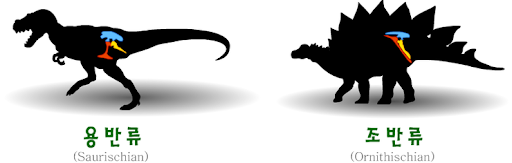

되돌아가기
- Definition
- Classification
- Biology
- 한국어 페이지
- 정의
- 일반적 특징
- 공룡의 종류
공룡의 종류

전통적으로 공룡은 조반목(鳥盤目)과 용반목(龍盤目)의 두 종류로 분류된다. 전문가들은 이들 공룡이 헤레라사우루스라는 훨씬 초기 공룡으로부터 진화했다고 믿고 있다. 시간이 지나면서 조반목의 동물이 용반목의 동물의 수를 넘어섰고 새로운 공룡들이 두 집단에서 진화되어 나왔다. 이들 새로운 공룡들은 생존에 보다 잘 적응하여 먹이를 얻고 적으로부터 도망치는 데 익숙했다. 용반류는 도마뱀의 골반을 닮고, 조반류는 새의 골반을 닮았다.
용반목은 수각아목와 용각아목으로 나뉘며, 용반목의 허리는 파충류처럼 장골, 치골, 좌골이 세 방향을 나타내고 있으며, 좌골에서 치골이 앞으로 향하는 것으로 식별된다. 용반목에는 크기가 크거나 육식 공룡들이 포함된다. 용반목에 속하는 수각류는 현생 조류의 조상이다.
조반목은 크게 각각아목과 장순아목으로 나뉜다. 모든 조반목은 나무나 풀을 뜯어먹고 살았던 초식 공룡으로 입에는 부리처럼 생긴 뼈가 발달했으며, 대부분 몸에 골판(骨板)이 붙어 있었다. 허리는 조류처럼 치골이 좌골에 평행하며, 뒤쪽을 향하고 있었다. 잎 모양의 치관을 가진 초식동물로 어떤 것은 앞니가 없으나 대체로 강력한 어금니를 가졌다. 또한 척추를 뻣뻣하게 하는 힘줄도 가졌다. 백악기에는 조반목이 가장 중요한 초식공룡이었다. 현생 조류하고는 분류학상 무관하다.